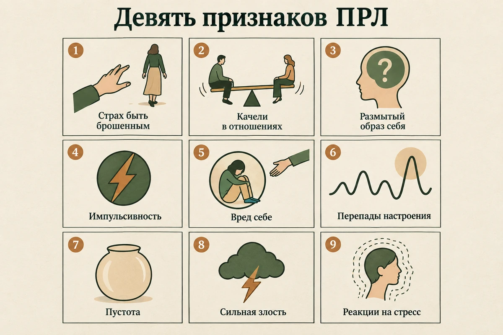

Главная → Блог → Пограничное расстройство личности
Пограничное расстройство личности (ПРЛ): симптомы, признаки, причины и лечение
Обновлено: 20.09.2026 · Источники проверены: 20.09.2026 · 25 минут чтения
Подготовлено по клиническим рекомендациям Минздрава РФ и NICE, материалам NHS и NIMH, описаниям в МКБ-10 и МКБ-11, Кокрейновскому обзору и рецензируемым метаанализам

Пограничное расстройство личности (ПРЛ) — это устойчивый способ переживать и действовать, в центре которого нестабильность: эмоций, отношений и представления о себе. Чувства переключаются быстро и часто в ответ на то, что происходит в отношениях; отношения качаются от восхищения до разрыва; ответ на вопрос «кто я» может меняться от месяца к месяцу. Это не слабость характера и не «просто сложный человек»: расстройство описано и в международных классификациях, и в российских клинических рекомендациях, оно хорошо изучено и лечится — причём прогноз у него заметно лучше, чем считалось ещё двадцать лет назад. Ниже — девять признаков, которые учитывают при диагностике, чем ПРЛ отличается от биполярного расстройства и ПТСР, почему возникает, что помогает и как быть тем, кто рядом.
- Что такое пограничное расстройство личности
- Как это переживается изнутри
- Признаки ПРЛ: четыре области
- 9 признаков ПРЛ: что учитывают при диагностике
- Почему эмоции так нестабильны
- Чем ПРЛ отличается от биполярного расстройства, ПТСР и СДВГ
- Как ставят диагноз
- ПРЛ у подростков
- Почему возникает ПРЛ
- Мифы и стигма вокруг ПРЛ
- Чем опасно ПРЛ без помощи
- Как лечат пограничное расстройство
- Что можно делать уже сейчас
- Как быть рядом с человеком с ПРЛ
- Можно ли выздороветь
- Куда обращаться в России
- Частые вопросы
Что такое пограничное расстройство личности
Пограничное расстройство личности — это состояние, при котором человеку постоянно трудно регулировать собственные эмоции, и эта трудность затрагивает отношения, поведение и представление о себе. Речь не об отдельном тяжёлом периоде, а об устойчивом рисунке, который держится годами и проявляется в разных сферах жизни.
Само название историческое и мало что объясняет. В середине XX века считалось, что такие пациенты находятся «на границе» между неврозом и психозом. Современная психиатрия так не думает, но термин остался.
Почему в разных документах разные названия
Пользователь легко может получить три разные формулировки от трёх специалистов — и это не ошибка, а разные классификации.
- DSM-5-TR (американская классификация) сохраняет ПРЛ как отдельный диагноз с девятью признаками.
- МКБ-11 описывает расстройства личности прежде всего по степени тяжести, а «пограничный паттерн» идёт как дополнительная характеристика, которую врач может указать сверх основного диагноза.
- МКБ-10, по которой в России ставят диагнозы, относит это состояние к эмоционально неустойчивому расстройству личности: F60.3, где F60.31 — пограничный тип. Именно этот код вы увидите в российской выписке, и он обозначает то же самое, о чём в интернете пишут «ПРЛ».
Практический вывод: если в одном документе написано «эмоционально неустойчивое расстройство личности, пограничный тип», а в другом «ПРЛ» — речь об одном и том же состоянии.
Насколько это частое состояние
По метаанализу исследований населения (2025) пограничное расстройство есть примерно у 2,4% взрослых, причём оценки в отдельных работах расходятся от 0,7% до 7%. Российские клинические рекомендации приводят сопоставимый порядок цифр для расстройств личности в целом — 5–10% населения, с разбросом 0,5–7,8% для отдельных типов.
ПРЛ у мужчин и женщин
Долгое время ПРЛ считали преимущественно «женским» диагнозом. Данные по населению эту картину смягчают: распределение между мужчинами и женщинами там ровнее, чем в клиниках. Показательно отдельное исследование распространённости ПРЛ у мужчин (2025), объединившее 11 работ: по клиническим интервью соотношение мужчин к женщинам получилось 43:100, а по опросникам самоотчёта — 73:100. То есть чем меньше в оценке участвует клиницист, тем меньше разрыв между полами.
Авторы объясняют это сочетанием причин: разной формой проявлений и смещением в диагностической практике. У мужчин эмоциональная нестабильность чаще выглядит как вспышки злости, алкоголь и рискованное поведение — и попадает под другие ярлыки, а не под «нестабильность в отношениях».
Как это переживается изнутри
Описания в классификациях сухие, и по ним трудно узнать себя. Изнутри это обычно выглядит иначе.
Человек живёт с постоянно включённым усилителем чувств. То, что для другого — мелкая неприятность, здесь ощущается как катастрофа: не ответили на сообщение, сказали короткое «ладно», посмотрели мимо. Возникает мгновенная и очень сильная боль, а вместе с ней — понимание, что реакция несоразмерна, и стыд за неё. К исходному чувству добавляется второе: злость на себя за то, что «опять».
Дальше включается то, что снимает напряжение быстро: резкое сообщение, разрыв, алкоголь, трата, самоповреждение. Это работает как обезболивающее — на минуты. А потом приходит раскаяние и страх, что теперь-то человек точно уйдёт.
Отдельная часть — пустота. Не грусть, а именно ощущение, что внутри ничего нет: непонятно, чего хочешь, что тебе нравится, кто ты без другого человека рядом. Из-за этого и рождается то самое цепляние за отношения, которое со стороны читают как манипуляцию. На деле это чаще всего попытка не исчезнуть.
Признаки ПРЛ: четыре области
NHS группирует проявления пограничного расстройства в четыре области. Такая разбивка удобнее списка критериев: она показывает, что все признаки — следствие одной трудности с регуляцией чувств.
1. Нестабильность эмоций
- Настроение меняется быстро: от подъёма к отчаянию, тревоге или ярости.
- Сила чувства несоразмерна поводу, и человек обычно сам это видит.
- Возвращение к спокойствию даётся труднее и занимает больше времени.
- Долгое, фоновое ощущение пустоты и одиночества.
- Злость, которую трудно остановить, — а потом стыд за неё.
2. Нестабильные отношения
- Сильный страх быть брошенным и отчаянные попытки этого не допустить.
- Отношение к близкому качается от идеализации до разочарования и злости.
- Малейшие признаки холодности читаются как отвержение.
- Одновременное желание максимальной близости и страх, что в ней задушат.
- Резкие разрывы, о которых потом человек жалеет.
3. Импульсивность и самоповреждение
- Поступки, которые быстро снимают напряжение, но потом вредят: траты, алкоголь, рискованное вождение, случайные связи, срывы на еде.
- Самоповреждение как способ быстро изменить невыносимое состояние.
- Мысли о том, чтобы не жить, особенно на пике отчаяния.
4. Сдвиги в мышлении и восприятии себя
- Неустойчивый образ себя: цели, взгляды, даже вкусы меняются вслед за окружением.
- Мышление «всё или ничего»: человек или прекрасен, или невыносим, середины нет.
- На сильном стрессе — подозрительность, ощущение нереальности происходящего или отстранённости от собственного тела.
- Иногда — короткие эпизоды необычных переживаний, которые проходят вместе со стрессом. NHS советует не игнорировать их и обязательно рассказать о них врачу.

9 признаков ПРЛ: что учитывают при диагностике
Запрос «9 признаков ПРЛ» приходит из американской классификации DSM-5-TR: в ней у пограничного расстройства описаны именно девять признаков. Приводим их своими словами.
- Отчаянные попытки избежать расставания — реального или только предполагаемого.
- Нестабильные и напряжённые отношения, в которых человек качается между идеализацией другого и разочарованием в нём.
- Неустойчивый образ себя: представление о том, кто ты и чего хочешь, заметно меняется.
- Импульсивность как минимум в двух сферах, где она может навредить: деньги, алкоголь и вещества, вождение, еда, случайные связи.
- Повторяющееся самоповреждающее или суицидальное поведение, попытки или угрозы.
- Эмоциональная неустойчивость: выраженные перепады настроения, которые обычно держатся часами и редко дольше нескольких дней.
- Хроническое чувство пустоты.
- Несоразмерная злость или трудность её контролировать.
- Преходящие реакции на сильный стресс: подозрительность или выраженное ощущение нереальности происходящего и отстранённости от себя.

Диагноз по DSM-5-TR рассматривают, когда устойчиво присутствуют не менее пяти признаков из девяти. Но именно здесь чаще всего происходит ошибка самодиагностики: совпадение по списку — это только вход в разговор, а не вывод.
Почему эмоции так нестабильны
У этого есть объяснение, и его стоит знать, потому что именно на него направлено лечение. Важно только не путать модель с доказанным фактом — в популярных текстах это смешивают постоянно.
Модель, на которой построена ДБТ
Марша Лайнен, автор диалектической поведенческой терапии, предложила описывать эмоциональную реакцию при ПРЛ через три особенности: низкий порог (реакция запускается от того, что другой почти не заметит), высокая интенсивность и медленное возвращение к спокойствию. Эта модель хорошо объясняет то, что люди описывают на приёме, и из неё выросли конкретные навыки, которым учат в терапии.
Что показали лабораторные проверки
А вот экспериментальные данные оказались сложнее модели. Метаанализ 31 исследования (1675 участников) сравнил реакцию людей с ПРЛ и без него по трём системам: физиология, поведение и самоотчёт. По физиологическим и поведенческим показателям различия оказались от нулевых до небольших — простая гипотеза «при ПРЛ тело всегда реагирует сильнее» не подтвердилась. Зато заметно различалось то, как человек оценивает происходящее: восприятие эмоциональных стимулов как более негативных и субъективное ощущение возбуждения.
Иначе говоря, дело не столько в силе самой вспышки, сколько в её оценке и в том, что происходит дальше. Одно из таких продолжений — руминация, бесконечное прокручивание ситуации. Метаанализ 2022 года показал, что руминация связана с симптомами ПРЛ, и сильнее всего — именно с эмоциональной нестабильностью. Это хорошо объясняет, почему чувство не затухает само: его раз за разом подогревает возвращение к той же сцене в голове.
Что из этого следует практически
Два вывода, и оба нужны в реальной жизни. Первый: на пике сильного возбуждения способность спокойно оценивать ситуацию и держать в голове альтернативные объяснения заметно снижается — поэтому спорить в этот момент бесполезно, и это не упрямство. Второй: главный навык, которому учат в терапии, — пережить пик, ничего не сделав, и не подливать топлива прокручиванием. Решения, принятые на вершине волны, остаются надолго.

Чем ПРЛ отличается от биполярного расстройства, ПТСР и СДВГ
Эмоциональная нестабильность — не уникальная примета пограничного расстройства. Её дают как минимум четыре разных состояния, и именно поэтому самостоятельный вывод здесь особенно рискован: лечатся они по-разному, и ошибка стоит лет.
Биполярное аффективное расстройство
Ключевое отличие — не «недели против часов», как часто пишут, а эпизодический характер перемен. При биполярном расстройстве речь об очерченных эпизодах, в которых меняется не только настроение, но и энергия, активность и потребность во сне: человек спит три часа и чувствует себя выспавшимся, говорит быстрее обычного, берётся за рискованные дела. При ПРЛ эмоциональные сдвиги чаще быстрые и связаны с тем, что происходит в отношениях. Оговорка: при ПРЛ реакция не обязана быть привязана к межличностному событию каждый раз, а при биполярном расстройстве эпизод может начаться после стресса — поэтому решает не одна примета, а вся картина.
Комплексное ПТСР
После долгого тяжёлого опыта, особенно в детстве, человек может жить в постоянной готовности к угрозе: вспыхивать, не доверять, резко отдаляться, ощущать себя испорченным. Картины во многом пересекаются, и различить их не всегда просто даже специалисту. Ориентир: при комплексном ПТСР в центре — реакция на пережитое (воспоминания, избегание, ощущение постоянной опасности), при ПРЛ — прежде всего страх быть брошенным и неустойчивый образ себя. Подробнее — в статье о посттравматическом стрессовом расстройстве.
СДВГ у взрослых
Импульсивность и вспыльчивость характерны и для СДВГ. Отличие в том, что при СДВГ они идут в комплекте с трудностями внимания и организации, заметны с детства и проявляются везде — на работе, за рулём, в быту, — а не концентрируются в близких отношениях. Эти состояния к тому же нередко сочетаются. Как выглядит взрослый СДВГ — в отдельном разборе.
Депрессия, выгорание, юность
На фоне депрессии и выгорания раздражительность, пустота и чувство бессмысленности усиливаются, но это состояние, у которого есть начало и конец, а не устойчивый рисунок. У подростков и людей в остром кризисе эмоциональная нестабильность — частое и во многом временное явление.
| ПРЛ | Биполярное расстройство | Комплексное ПТСР | СДВГ | |
|---|---|---|---|---|
| Что запускает перемены | Чаще события в отношениях: отказ, холодность, молчание | Эпизод начинается во многом сам по себе | Напоминания о пережитом | Задачи, скука, усталость, интерес |
| Сколько держится | Часы, иногда до нескольких дней | Дни и недели, очерченным эпизодом | Всплеск и долгий откат | Колебания в течение дня, фоном всю жизнь |
| Что в центре | Страх быть брошенным и образ себя | Смена уровня энергии и активности | Опасность и её последствия | Внимание, организация, торможение импульса |
| Что помогает различить | Устойчивый многолетний рисунок в отношениях | Меняются сон, речь, активность, а не только настроение | Есть события, которые это объясняют | Следы из детства, до 12 лет |
| Основное лечение | Специализированная психотерапия | Лекарства плюс психотерапия | Терапия, работающая с травмой | Лекарства и поведенческие стратегии |

Как ставят диагноз
Диагноз ставит психиатр или врач-психотерапевт на очной консультации — по беседе, а не по опроснику. Анкета может показать, что ваш опыт похож на пограничный паттерн, но отличить расстройство личности от травмы, СДВГ, биполярного расстройства или затянувшегося кризиса она не способна.
На что смотрит врач:
- Длительность. Устойчивый рисунок, который прослеживается с подросткового возраста или ранней взрослости, а не реакция на последние несколько месяцев.
- Всеохватность. Проявляется в разных сферах и с разными людьми, а не только в одних конкретных отношениях.
- Выраженность последствий. Страдания и трудности в работе, учёбе, отношениях, а не просто «эмоциональный характер».
- Что ещё может это объяснять. Депрессия, ПТСР, СДВГ, биполярное расстройство, употребление психоактивных веществ, эндокринные нарушения.
- Сопутствующие состояния. По данным NIMH, вместе с ПРЛ часто встречаются депрессия, тревожные расстройства, ПТСР, зависимости и расстройства пищевого поведения. Их обычно лечат параллельно.
Отдельно стоит сказать про анализы и обследования: специфического анализа крови или снимка, подтверждающего ПРЛ, не существует. Обследования назначают, чтобы исключить другие причины — например, нарушения работы щитовидной железы, — а не чтобы «увидеть» расстройство личности.
ПРЛ у подростков
Это отдельный и болезненный вопрос: родителям страшно и от самих симптомов, и от мысли о диагнозе в 15 лет.
Когда это начинается. Как отмечают авторы обзора в The Lancet (2021), связная картина ПРЛ обычно складывается именно в подростковом возрасте, после 12 лет, и часто ей предшествуют тревога, депрессия или проблемы с поведением. То есть подростковый возраст — не «слишком рано», а типичное время начала.
Когда ставят диагноз. NIMH указывает, что диагноз чаще устанавливают в позднем подростковом возрасте или ранней взрослости, а человеку младше 18 — в отдельных случаях, когда симптомы выраженные и держатся не меньше года. Раньше диагноз откладывали до совершеннолетия, чтобы «не навешивать ярлык»; современные руководства от этого отходят, потому что отказ называть проблему означает и отказ от помощи в тот период, когда она действует лучше всего. Российские клинические рекомендации по специфическим расстройствам личности при этом написаны для взрослых, и подростком занимается детский психиатр.
Чем это отличается от «обычного подростка». Бурные эмоции, конфликты с родителями, поиск себя и резкая смена компаний — нормальная часть взросления. Насторожить должно другое: самоповреждение, разговоры о нежелании жить, устойчивый страх быть брошенным, из-за которого рушатся все отношения подряд, и то, что состояние держится не неделями, а год и дольше и мешает учёбе и дружбе.
Что делать родителю. Не ставить диагноз самостоятельно и не спорить с чувствами («да что у тебя за проблемы в твоём возрасте»). Записаться к детскому психиатру или в психоневрологический диспансер, а при самоповреждении — не откладывать. Как отличить возрастные перемены от болезни, подробнее — в статье о подростковой депрессии.
Почему возникает ПРЛ
Единственной причины нет. Это самый честный ответ, и он же самый полезный: он снимает поиск виноватого, который обычно заканчивается тем, что человек винит себя или родителей, а помощь откладывается.
Наследуемые особенности
Склонность к сильным и быстрым эмоциональным реакциям во многом врождённая. В исследованиях близнецов наследуемость пограничных черт оценивают примерно в половину. Эту цифру важно понимать правильно: наследуемость — это доля различий между людьми в конкретной популяции, которую статистически связывают с генетическими различиями. Она не означает, что у конкретного человека «половина расстройства от генов, а половина от родителей», и не указывает на существование отдельного «гена ПРЛ». Речь о темпераменте: чувствительности, скорости реакции, трудности торможения импульса.
Среда, в которой чувства обесценивали
Вторая большая группа факторов — опыт. Чаще всего речь об окружении, где переживания ребёнка систематически отменяли: «не выдумывай», «тебе не больно», «прекрати истерику». Ребёнок в такой среде не учится двум вещам: называть своё состояние и успокаивать себя. Сюда же относится и более тяжёлый опыт — насилие, пренебрежение, долгий страх, тяжёлая болезнь или зависимость у близкого взрослого.
Связь с детским опытом в исследованиях очень сильная: по метаанализу 97 работ, люди с ПРЛ примерно в 14 раз чаще сообщают о тяжёлом детском опыте, чем люди без психических расстройств, причём сильнее всего связаны эмоциональное насилие и пренебрежение. Подробнее о том, как этот опыт работает во взрослой жизни, — в статье о детских травмах.
Что видно на снимках
NHS описывает находки осторожно: у многих людей с ПРЛ отличается работа областей, связанных с переживанием эмоций и контролем импульса. По снимку диагноз не ставят, и «поломки» в буквальном смысле там нет — это описание, а не объяснение.
Мифы и стигма вокруг ПРЛ
Вокруг ПРЛ накопилось несколько устойчивых представлений, из-за которых люди откладывают обращение за помощью или получают формальную отписку вместо лечения. Их стоит разобрать по отдельности.
«Они манипуляторы»
Самый частый и самый вредный миф. Поведение человека с ПРЛ действительно иногда выглядит для окружающих как манипуляция. Но внешняя форма поведения сама по себе не говорит о намерении: за ней могут стоять страх отвержения, сильный дистресс, импульсивность и попытка быстро изменить невыносимое состояние. Из этого мифа растёт практика «не идти на поводу», при которой человека наказывают холодом ровно за то, ради чего он и обратился.
«Это неизлечимо, с ними невозможно работать»
Взгляд устарел лет на двадцать. Как отмечают авторы обзора в The Lancet, раньше расстройство считали не поддающимся лечению, но прогресс в понимании и методах привёл к более ранней диагностике и лучшим результатам. Сегодня ПРЛ — одно из тех состояний, где психотерапия работает доказанно.
«Самоповреждение — способ привлечь внимание»
Самоповреждение может использоваться как способ быстро изменить невыносимое эмоциональное состояние: снизить напряжение, переключить внимание, вернуть ощущение контроля. Функции у разных людей и в разных эпизодах различаются, и свести их к «привлечению внимания» нельзя. Реагировать на это как на спектакль опасно: риск для жизни при ПРЛ реален независимо от того, как поведение выглядит со стороны.
«Диагноз — клеймо на всю жизнь»
Диагноз сам по себе не описывает человека целиком. Он нужен для того, чтобы определить характер трудностей и подобрать подходящее лечение — в случае ПРЛ вполне конкретное. К тому же он не вечен: значительная часть людей со временем перестаёт соответствовать его критериям.
Чем опасно ПРЛ без помощи
Главный риск — суицидальный. В метаобзоре World Psychiatry, обобщившем данные по смертности при психических расстройствах, пограничное расстройство личности названо среди состояний с наиболее высоким риском самоубийства — наряду с депрессией, биполярным расстройством и нервной анорексией. Это не повод для паники, а довод против откладывания помощи: именно суицидальное поведение и самоповреждение лучше всего отвечают на специализированную терапию.
Остальные последствия накапливаются медленно и именно поэтому недооцениваются:
- разрушенные отношения и вслед за ними — изоляция, которая усиливает страх быть брошенным;
- прерванная учёба и нестабильная работа, а вместе с ними финансовые трудности;
- алкоголь и вещества как способ выключить чувство;
- сопутствующие депрессия, тревожные расстройства и расстройства пищевого поведения;
- телесные последствия хронического стресса и бессонницы.
Как лечат пограничное расстройство
Основное лечение ПРЛ — психотерапия, и довольно длительная. Это не «поговорить о детстве»: специализированные программы устроены как обучение конкретным навыкам и рассчитаны на месяцы и годы. Российские и британские рекомендации в этом сходятся, хотя формулируют по-разному.
Что рекомендуют в России
Действующие клинические рекомендации «Специфические расстройства личности» разработаны Российским обществом психиатров, одобрены Научно-практическим советом Минздрава РФ в 2024 году и действуют с пересмотром не позднее 2026-го. Главное из них для человека с ПРЛ:
- основой помощи названа долгосрочная психотерапия вместе с психосоциальной терапией и реабилитацией;
- при пограничном расстройстве в первую очередь рассматриваются когнитивно-поведенческая терапия и её разновидности — диалектическая поведенческая терапия и схема-терапия, — а также терапия, ориентированная на перенос, и терапия, основанная на ментализации;
- специфического лечения самого расстройства личности не существует; лекарства используют при сопутствующих расстройствах или при временном ухудшении состояния, и данных о пользе длительной медикаментозной терапии практически нет;
- прямо сказано, что лекарства не влияют на такие проявления, как хроническое чувство пустоты, нарушение идентичности, диссоциация и избегание возможного отказа.
Что говорят зарубежные рекомендации и исследования
Самый крупный свод данных — Кокрейновский обзор 2020 года: 75 исследований и более 4500 участников. Психотерапия оказалась эффективнее обычного лечения по тяжести симптомов ПРЛ, самоповреждению и суицидальному поведению; отдельно отмечены диалектическая поведенческая терапия (тяжесть симптомов, самоповреждение, социальное функционирование) и терапия на основе ментализации (самоповреждение, суицидальность, депрессия). Авторы честно оговаривают, что качество доказательств пока невысокое, а средний эффект — умеренный. Это означает «работает, но не мгновенно и не у всех одинаково», а не «бесполезно».
Британские рекомендации NICE CG78 формулируют лекарственный вопрос ещё жёстче: препараты не должны применяться специально для лечения пограничного расстройства или его отдельных симптомов — ни для самоповреждения, ни для эмоциональной нестабильности, ни для рискованного поведения; антипсихотики не рекомендованы для средне- и долгосрочного лечения; в кризисе допускается короткое назначение успокаивающего средства, обычно не дольше недели.
Диалектическая поведенческая терапия (ДБТ)
Метод, созданный специально для людей с сильной эмоциональной нестабильностью и повторяющимся самоповреждением. Важный нюанс, который часто передают неточно: конкретная рекомендация NICE о полноценной программе ДБТ сформулирована для женщин с ПРЛ, когда приоритетом является снижение повторяющегося самоповреждения, — это не значит, что ДБТ показана только им, метод применяется шире. Программа обычно включает индивидуальные сессии, группу навыков и возможность связаться с терапевтом в кризис. Учат четырём группам навыков:
- переносить дистресс — пережить пик, не усугубив ситуацию;
- регулировать эмоции — замечать, называть и снижать интенсивность чувства;
- осознанности — возвращаться в текущий момент из бури мыслей;
- межличностной эффективности — просить, отказывать и сохранять отношения.
Другие признанные подходы
Терапия, основанная на ментализации, учит понимать собственные состояния и состояния другого человека — особенно тогда, когда эмоции зашкаливают. Схема-терапия работает с устойчивыми паттернами, сложившимися в детстве. Терапия, сфокусированная на переносе, использует сами отношения с терапевтом как материал для работы. Приёмы когнитивно-поведенческой терапии входят в большинство программ как строительный материал.
Сколько это длится
NICE прямо не рекомендует использовать короткие программы длительностью менее трёх месяцев как самостоятельное специализированное лечение ПРЛ. Это не значит, что несколько консультаций бесполезны: короткий курс может помочь оценить состояние, пережить конкретный кризис или решить отдельную задачу. Но выдавать его за полноценную программу лечения пограничного расстройства не стоит — ни специалисту, ни самому человеку перед собой.

Что можно делать уже сейчас
Самопомощь не заменяет терапию, но время до первого приёма тоже нужно как-то прожить. Эти шаги взяты из логики ДБТ и не требуют подготовки.
- Научитесь замечать подъём волны. У неё почти всегда есть телесные предвестники: сжатие в груди, жар в лице, ком в горле, участившееся дыхание. Чем раньше вы их поймаете, тем больше выбора остаётся. Полезно неделю записывать: что случилось, что почувствовал, насколько сильно от 0 до 10, что сделал.
- Держите под рукой три способа пережить пик. Холодная вода на лицо или в ладони, короткая интенсивная нагрузка (быстро подняться по лестнице), медленный выдох длиннее вдоха. Это не психология, а физиология: такие приёмы снижают возбуждение и дают те самые несколько минут.
- Введите правило суток. Никаких необратимых решений на пике: не увольняться, не расставаться, не отправлять сообщение, не удалять аккаунты. Если решение верное, оно останется верным и завтра. Черновик можно написать и не отправлять.
- Прерывайте прокручивание. Именно оно чаще всего удерживает чувство на высоте часами. Помогает не «перестать об этом думать», а сменить режим: назвать вслух, что происходит («я сейчас прокручиваю разговор»), и переключить тело — пройтись, умыться, заняться делом руками.
- Проверяйте интерпретацию, а не доверяйте ей. «Он молчит» — факт. «Он меня бросает» — догадка. Спросить прямо: «Ты на меня сердишься? Мне тревожно от молчания» — почти всегда дешевле, чем действовать по догадке.
- Снижайте уязвимость. Недосып, голод, похмелье и боль делают волну выше, а торможение слабее. Сон и еда по расписанию звучат скучно, но реально уменьшают количество срывов.
- Составьте план кризиса заранее. На листе: кому позвонить, какие три вещи сделать, номера служб, что говорить себе. В остром состоянии придумывать это невозможно, а читать — можно.
- Ищите специалиста прицельно. На первой консультации спросите, работает ли специалист с эмоциональной регуляцией, знаком ли с ДБТ, ментализацией или схема-терапией. Это нормальный вопрос, и адекватного специалиста он не обидит.
Если главным проявлением у вас оказываются вспышки злости, из-за которых потом стыдно, полезен отдельный разбор о том, как перестать срываться. А если тяжелее всего даётся страх потерять близкого и зависимость от его настроения — посмотрите статью об эмоциональной зависимости.
Между приступом и приёмом у специалиста обычно есть время, которое нужно чем-то заполнить. В AI Therapist можно спокойно описать происходящее словами и подготовиться к разговору со специалистом — без регистрации и в любое время суток. Это не лечение и не замена экстренной или профессиональной помощи.
Как быть рядом с человеком с ПРЛ
Близким обычно достаётся не меньше, и советы «просто поддерживайте» здесь не работают. Работают предсказуемость и спокойные границы.
- Сначала признайте чувство, потом обсуждайте факты. «Вижу, тебе сейчас очень плохо» — не согласие с обвинениями, а способ снизить накал. Пока волна на пике, доводы обычно не доходят.
- Не спорьте о том, «правда ли это так страшно». Переживание уже есть; обесценивание его усиливает, потому что повторяет ту самую ситуацию отмены чувств.
- Границы обозначайте заранее и держите ровно. «Я не могу говорить на повышенных тонах, давай вернёмся через час» — это не наказание и не уход. Важно вернуться через час, как и обещали: предсказуемость лечит страх брошенности лучше любых заверений.
- Не принимайте решений на пике ссоры. Правило суток работает в обе стороны.
- Не берите на себя роль терапевта. Вы не обязаны быть круглосуточной службой поддержки, и попытка ею стать заканчивается выгоранием и разрывом — то есть подтверждением главного страха.
- Относитесь к разговорам о смерти серьёзно каждый раз. Прямой вопрос «ты думаешь о том, чтобы покончить с собой?» не подталкивает к поступку — он открывает разговор.
- Позаботьтесь и о себе. Своя терапия, свой круг общения, свои дела вне этих отношений — это не эгоизм, а условие, при котором вы сможете оставаться рядом долго.
NICE отдельно рекомендует включать семью и близких в помощь — с согласия самого человека — и давать им доступ к информации и группам поддержки. Понимание механики со стороны близких заметно снижает количество конфликтов.

Можно ли выздороветь
Да, и это самая обнадёживающая часть темы. NHS формулирует прямо: со временем многие люди с пограничным расстройством преодолевают симптомы и выздоравливают.
Точнее всего картину показывает 16-летнее наблюдение исследовательской группы Маклин-госпиталя. К концу наблюдения ремиссии — то есть состояния, при котором человек уже не соответствует критериям диагноза, — достигли от 78% до 99% участников в зависимости от того, насколько долгую ремиссию требовали засчитать. Симптомы уходят, и уходят у большинства.
Но у той же работы есть вторая половина, о которой честнее сказать сразу. «Выздоровление» в строгом смысле — это ремиссия плюс устойчивая работа и нормальные социальные связи — наступило у 40–60%. И рецидивы случаются: у 10–36% симптомы возвращались. Иными словами, тяжёлая симптоматика отступает раньше, чем восстанавливается жизнь вокруг неё, и работа с социальной стороной — отдельная задача, которую стоит держать в фокусе терапии.
Что улучшает прогноз: раннее начало лечения, специализированная (а не любая) психотерапия, работа с сопутствующими состояниями, отказ от алкоголя как способа регуляции и хотя бы одна устойчивая опора в окружении.
Куда обращаться в России
Диагностикой и лечением занимается психиатр или врач-психотерапевт (это медицинская специальность, в отличие от психолога). Бесплатно попасть к нему можно по полису ОМС — в психоневрологическом диспансере по месту жительства, а начать можно с направления от терапевта.
Про «постановку на учёт». Того, что в быту называют учётом, в законе нет — есть диспансерное наблюдение, и это не то же самое, что обычная консультация. Диспансерное наблюдение устанавливает комиссия врачей-психиатров, и основанием для него служит хроническое или затяжное психическое расстройство с тяжёлыми стойкими или часто обостряющимися проявлениями. Оно не пожизненное: при стойком улучшении состояния наблюдение прекращают. Мы не даём юридических консультаций и не обещаем, что наличие диагноза ни на что не влияет: наблюдение действительно может учитываться при некоторых медицинских справках. Но сам факт обращения за консультацией его не означает. Подробный разбор с ссылками на закон и список бесплатных служб — в справочнике помощи.
Для психотерапии ищите специалиста прицельно: по ключевым словам «диалектическая поведенческая терапия», «терапия, основанная на ментализации», «схема-терапия». Психолог без медицинского образования диагноз не ставит, но вести долгую работу по этим методам может.
Частые вопросы
Что такое пограничное расстройство личности простыми словами?
Это устойчивый, многолетний способ переживать и действовать, в центре которого нестабильность: эмоций, отношений и представления о себе. Чувства переключаются быстро и часто в ответ на то, что происходит в отношениях; ответ на вопрос «кто я» может меняться от месяца к месяцу. Это не черта характера и не дурное воспитание, а состояние, которое описано в международных классификациях и в российских клинических рекомендациях и которое лечится.
Сколько признаков нужно для диагноза ПРЛ?
В американской классификации DSM-5-TR описаны девять признаков, и диагноз рассматривают, когда устойчиво присутствуют не менее пяти из них. Но посчитать их у себя по списку недостаточно: врач оценивает ещё длительность, охват разных сфер жизни, степень нарушений и то, не объясняется ли картина другими причинами. В России диагноз ставят по МКБ-10, где пограничный тип кодируется как F60.31.
Можно ли поставить себе диагноз ПРЛ по симптомам?
Нет. Отдельные признаки из списка бывают почти у всех в тяжёлые периоды, после расставания или в юности, а похожую картину дают ПТСР, СДВГ, биполярное расстройство и последствия употребления алкоголя. Расстройство личности определяется не набором черт, а их устойчивостью и всеохватностью, и оценивает это врач на очной консультации.
Чем ПРЛ отличается от биполярного расстройства?
При биполярном расстройстве перемены идут очерченными эпизодами, и меняется не только настроение, но и энергия, активность и потребность во сне. При пограничном расстройстве эмоции переключаются быстрее и чаще связаны с тем, что происходит в отношениях. Различить эти состояния может только врач, потому что лечатся они по-разному.
Бывает ли ПРЛ у мужчин?
Да. По данным клинических интервью мужчинам диагноз ставят примерно вдвое реже, чем женщинам, но при опросниках самоотчёта разрыв почти исчезает. Исследователи объясняют это в том числе разницей в том, как состояние проявляется и как его распознают: у мужчин эмоциональная нестабильность чаще выглядит как вспышки злости, алкоголь или рискованное поведение.
Бывает ли ПРЛ у подростков?
Да, и обычно связная картина складывается именно в подростковом возрасте. NIMH указывает, что диагноз чаще ставят в позднем подростковом возрасте или ранней взрослости, а до 18 лет — в отдельных случаях, когда симптомы выраженные и держатся не меньше года. При этом бурные эмоции сами по себе не диагноз: отличает устойчивость картины и то, насколько она мешает жить.
Виноваты ли родители в том, что у человека ПРЛ?
Однозначно указать виноватого нельзя. Люди с пограничным расстройством чаще сообщают о тяжёлом детском опыте, но у расстройства не бывает единственной причины, а исследования близнецов показывают, что связь детской травмы с пограничными чертами частично объясняется общими семейными и генетическими факторами. Многие люди с ПРЛ выросли без насилия, и наоборот.
Можно ли вылечить пограничное расстройство личности?
Прогноз гораздо лучше, чем принято думать. В длительных наблюдениях большинство людей с ПРЛ со временем перестают соответствовать критериям диагноза, и NHS прямо пишет, что многие преодолевают симптомы и выздоравливают. Труднее и дольше восстанавливается не симптоматика, а жизнь вокруг неё — работа и устойчивые отношения. Основное лечение — длительная специализированная психотерапия.
К какому врачу обращаться при подозрении на ПРЛ?
Диагноз ставит психиатр или врач-психотерапевт на очной консультации, в России это можно сделать бесплатно по полису ОМС. Консультация сама по себе не означает установления диспансерного наблюдения: его устанавливает комиссия врачей-психиатров при хроническом или затяжном расстройстве с тяжёлыми стойкими проявлениями. Для психотерапии стоит искать специалиста, который работает с диалектической поведенческой терапией, терапией на основе ментализации или схема-терапией.
Как подготовлен материал. Текст подготовлен редакцией AI Therapist. Мы опираемся на клинические рекомендации Минздрава РФ и NICE, описания расстройств в МКБ-10 и МКБ-11, материалы NHS и NIMH, Кокрейновские обзоры и рецензируемые метаанализы; цифры приводим по первоисточникам и ставим ссылки рядом с ними. Там, где данные исследований расходятся с популярными представлениями — как в случае гипотезы об эмоциональной гиперреактивности, — мы пишем об этом прямо. Материал носит просветительский характер и не заменяет консультацию врача: расстройство личности может определить только специалист на очной консультации.
Источники: Клинические рекомендации «Специфические расстройства личности», Российское общество психиатров, одобрены Минздравом РФ, 2024, МКБ-11, ВОЗ — расстройства личности и пограничный паттерн (6D10, 6D11.5), NICE CG78 — Borderline personality disorder: recognition and management, NHS — Borderline personality disorder, NIMH — Borderline Personality Disorder, Bohus M. et al. «Borderline personality disorder», The Lancet, 2021, Storebø O. J. et al. «Psychological therapies for people with borderline personality disorder», Cochrane Database of Systematic Reviews, 2020, Zanarini M. C. et al. «Attainment and stability of sustained symptomatic remission and recovery», American Journal of Psychiatry, 2012, Ramos-Suárez I. et al. «Epidemiology of borderline personality disorder in the general population», Journal of Affective Disorders, 2026, Huo Y. et al. «Prevalence of borderline personality disorder among men in the general population», Personality Disorders, 2026, Porter C. et al. «Childhood adversity and borderline personality disorder: a meta-analysis», Acta Psychiatrica Scandinavica, 2020, Skaug E. et al. «Childhood trauma and borderline personality disorder traits: a discordant twin study», Journal of Psychopathology and Clinical Science, 2022, Bortolla R. et al. «Emotional Reactivity in Borderline Personality Disorder: a Meta-Analytic Review of Laboratory Studies», Journal of Personality Disorders, 2020, Richman Czégel M. J. et al. «Rumination in Borderline Personality Disorder: a Meta-analytic Review», Journal of Personality Disorders, 2022, Chesney E. et al. «Risks of all-cause and suicide mortality in mental disorders», World Psychiatry, 2014.
Кто отвечает за содержание сайта и по каким правилам мы готовим материалы — на странице о проекте.
Читать также
- Самопроверка на пограничные черты — 15 вопросов об эмоциях, отношениях и отношении к себе, результат сразу и без регистрации.
- Эмоциональная зависимость в отношениях — если главное переживание это страх потерять близкого.
- Вспышки гнева: как перестать срываться — разбор механики вспышки и семь шагов.
- Детские травмы у взрослых — как опыт, в котором чувства обесценивали, продолжает работать сейчас.
- ПТСР: признаки и лечение — состояние, которое чаще всего путают с пограничным.
- Подростковая депрессия — для родителей: как отличить возрастные перемены от болезни.
- Схема-терапия — один из подходов, признанных при пограничном расстройстве.